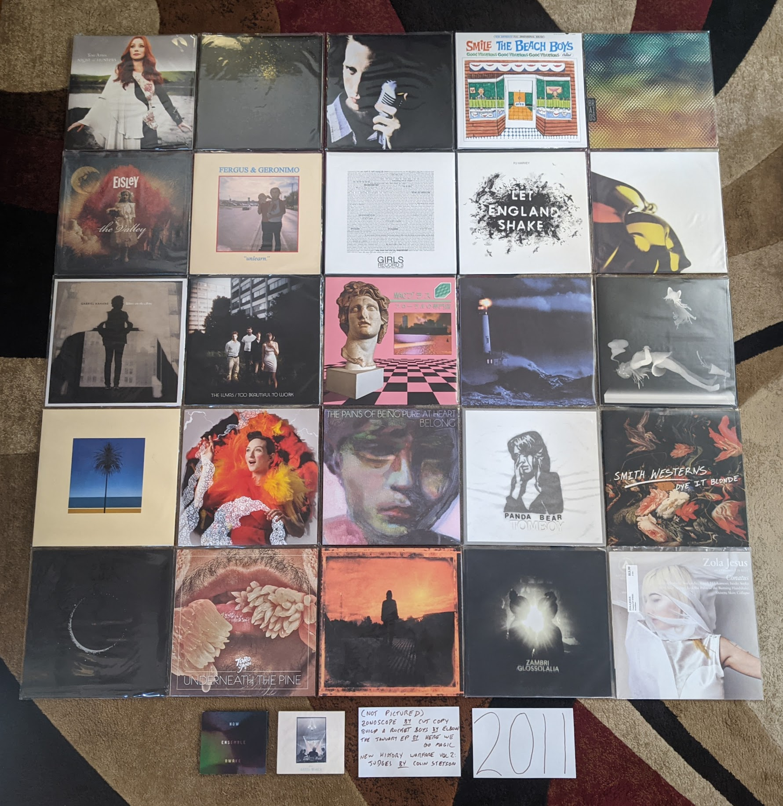

2011 Albums¶
I bought a house in 2011, and all of a sudden I had way more room for records. This was when I really committed myself to building a new music collection in vinyl records that would better represent my tastes and world view as a adult. This was also the year that Spotify was released and changed my consumption of music forever. When I listened to my playlist of favorites for this year, I was struck by how many of the releases shared a consistent sound. This was definitely the year of synthpop revival, chillwave and the seeds of vaporwave. 2011 has a distinct sound and I like it. Much of this music was designed to invoke non-specific memories of the 1980s. In retrospect, this music doesn’t really have many direct connections to that decade, but it all sure sounds like 2011.
{kind=link}
Night of Hunters by Tori Amos - Tori makes peace with her classical music roots and makes a brilliant record. Playing these reinterpretations of instrumental music shows off her extreme skills on the piano. [Memory: I saw her in NYC on this tour, and it was an amazing show. Having a rock band and a chamber ensemble was a great way to see her music presented. “Shattering Sea” was quite the show opener. Also found a great sushi place right by the venue.]
Burst Apart by The Antlers - They make a strong follow up to their NPR famous prior record. This has the same enjoyable loud/soft dynamic, and these guys are even giving into the synthpop bug a bit. Very pretty, and something I am always in the mood for. [Memory: I saw them at Crossing Brooklyn Ferry the next year and I was struck by how refined their performance had become as a band. It was both a good and bad thing.]
Parallax by Atlas Sound - For a brief moment Bradford Cox was the most compelling thing in music. His work from about 2008 to 2011 with Deerhunter and this solo project is universally outstanding. The catching little, reverb soaked tracks on offer here are both obvious and completely unique. “Angel is Broken” is one of my favorite songs of all time. [Memory: Yet another great performance from Crossing Brooklyn Ferry, Cox absolutely nailed almost this entire album in a compelling solo set.]
Smile by The Beach Boys - All of a sudden it was a real album that actually exists. It was surprising how exactly it matched the Brian Wilson version that been released years prior. Was it made to match, was it always supposed to sound this way? It sounds pretty much done, especially by 2010s indie rock standards, and wow this fits right in with the music of the time. Warm poppy psychedelic music at its finest, the world is better with this album in it. [Memory: I was in the middle of a huge Beach Boys phase when this was announced, and I bought the giant box set with all the extras. Probably more than I needed.]
Native Speaker by Braids - I really miss the first iteration of this band. The combination of spare electronics, strong percussion, and yelping vocals was the best in Canadian indie rock in the strongest era of Canadian music. They would make one more song in this style “In Kind” which is my favorite song from this decade, though the album it would appear on is mostly boring electronica. That is not the case here, this is one of the most exciting records in my collection. [Memory: I loved the video of the band performing “Plath Heart” and “In Kind” at the Polaris Prize gala in 2011, I wish that I could still stream that amazing performance.]
Zonoscope by Cut/Copy - Much of the synthpop being made in 2011 was alluding to an imagined, but non-existent alternative version of the 1980s. Not these guys, they would have fit right in that decade. One of best “new wave guy” voices of all time. I’ve always wondered if their name was an acknowledgement of how much this music borrows from the past. Who cares, its like New Order are still around making great new music. [Memory: Jumping up and down to this stuff at Pitchfork 2011 with all the indie kids]
The Valley by Eisley - The kids in this band grew up quickly. The primary singer and songwriter (one of the Dupree sisters, I’ve never been able to keep them straight) was going through a divorce and this is the main theme on this record. No more dreamscapes about horses growing out of the ground, the mood is alternately angry and reflective. It worked surprisingly well. Also, the vocal harmonies of the three sisters are outstanding. [Memory: By the time this had come out, I had forgot about this band, but an amazing performance of the title track on YouTube directed my attention to this gem]
Build A Rocket Boys by Elbow - Another extremely solid record that I really enjoy, but never need to own on vinyl. There is something about the sound of this music that will only ever make it a 3.5 stars out of 5. If they made more songs as interesting as the Krautrock inspired “The Birds” this might reach the next level in my collection. [Memory: At the time I was almost disappointed that I like another record by these guys, since it somehow feels a little obvious and boring to me at the same time?]
“unlearn.” by **Fergus & Geronimo* - Very few artists have tried to follow in the steps of Frank Zappa, but these guys have managed to do it pretty well. This owes huge debt to the early Mothers records, and I like the sense of humor way better, including the Pitchfork diss track, “Wanna Know What I Would Do If I Was You?” [Memory: Immediately before the Spotify era, I was using an curated, online discovery radio service the name of which I can’t remember. For some reason, the classic lowfi single by these guys, “Harder Than It’s Ever Been”, was listed on a “This is Chillwave/Glofi” list. That is why I blind bought this record on vinyl. It was great, but very different from that early single.]
Father, Son, Holy Ghost by Girls - Their career was short but highly productive. The third record gets a little proggy at times, but this is the same kind of tightly put together pop music as the first two. [Memory: In 2020 I made a Discogs catalog of my records and I was surprised to discover I never bought a vinyl copy of this. I’m glad I fixed that while it is still in print.]
Let England Shake by PJ Harvey - The wildest left turn in a career filled with them. Still singing exclusively in her church voice, PJ writes a bunch of songs exploring Britain’s imperial past. The saxophone and auto-harp are starting to replace the guitar. This is an artist peaking later in their career [Memory: I was really excited for this record, and followed the release cycle closely. I remember there was a preview performance of a track at some sort of UK National TV broadcast that the queen was supposedly watching at home. I wonder what she thought of PJ’s song about the missteps of the British Empire and the wild plume of feathers that she wore in her hair.]
The January EP by Here We Go Magic - I’m glad we got a few more songs from what was the best iteration of this band. After this, Radiohead’s producer would ruin things with too much production and too much focus on the lead singer/songwriter. This era was defined by contributions from an ensemble of musicians, particularly the warm fuzzy production stylings of bassist Jen Turner. It was a short but brilliant run by the five piece version. [Memory: Few albums have disappointed me more than the one that came after this one.]
True Loves by Hooray for Earth - [2011 FAVORITE] It took a while for them to release their first full length, but it was worth the wait. This stood out during a time when most indie rock was intentionally lofi or otherwise rough around the edges. The album is textured and slickly produced. There is a pleasant warmth to the songs, and everything feels nostalgic about a musical past that never existed. One of my all time favorites. [Memory: This is the band that made me find common interests with the Rochester music blog I would participate in for a little while.]
We Are the Arms by Gabriel Kahane - Gabe is a singer songwriter that grew out of the music school music scene in New York City. This is music that manages to be very beautiful, despite being very complex. “Last Dance” is still his finest work. [Memory: My enjoyment of this record is what made me realize I wasn’t really cut out to write for the indie rock blog I was contributing to. I did write a post about this song, but it felt wrong.]
Too Beautiful to Work by The Luyas - The Canadian music renaissance was starting to wind down, but there were a few great new artists still popping up. Many of them would start off strong, and then trail off. The Luyas would never again match the minimalist brilliance of this record. It is hard to believe they were able to ever get a French horn and zither sound to work as well as they did here. [Memory: I was able to attend the 2011 NxNE music festival as part of the press for the blog that I contributed to. I saw a memorable performance by this band early in my first evening club hopping with my press pass.]
Wits End by Cass McCombs - Sounds like something out of the 70s. Somber songwriter music, with some really interesting light psych elements. [Memory: I have a weird relationship with this record, as I continually forget how much I like it. I even forgot to add it to this writeup/picture, even though it made it through the initial filtering process and is clearly in my notes.]
Floral Shoppe by Mcintosh Plus - This is the first album I’m writing about that isn’t on Spotify. That is because this is illegal music. I didn’t realize that vaporwave was happening until it was mostly over. This is generally pointed to as the masterpiece of the genre, and I tend to agree. It is amazing how the various R&B tracks and sophista-pop tunes get morphed into a catchy avant garde swirl. [Memory: I spent months tracking down a reasonably priced copy of the vinyl “bootleg” that isn’t really a bootleg, they just call it that because this can’t be legally sold due to being comprised completely of other people’s music]
We Must Become the Pitiless Censors of Ourselves by John Maus - A masterful combination of synthpop and goth, this is an exceptional record. I don’t think I’m politically well aligned with this guy, and in retrospect the right wing agenda seems embedded in the title of this album. The music is first rate though. [Memory: I was introduced to this guy at a strange performance at a Pitchfork aftershow at Schuba’s in Chicago. The dude just screams over a backing track of his songs. People mosh, it is weird.]
Player Piano by Memory Tapes - I don’t think this guy liked getting lumped in with the chillwave crew. He responded with a weird kind of electronic pop music. Very bright and upbeat with little bursts of eccentric darkness. A wholely unique work, and what I see when I think back on what I miss about this period of popular music. [Memory: This record was hotly anticipated by the Pitchfork people, but they were completely confounded by it]
The English Riviera by Metronomy - This is by far their most straight forward pop record, and it lacks the instrumental experiments of most of their other work. The best moments on their records tend to sound like a kid playing with all the sounds on the casio, and this mood is perfected on “The Look.” [Memory: For some reason it took a while for me to warm up to this record, and I only added it to my favorites about 10 years after its release]
All Things Must Unwind by My Brightest Diamond - Of all the artists working in the area of pop and “fancy music” coming together, I don’t know that anyone does it better than Shara Nova (formerly Worden). On this album she goes all the way and uses a classical chamber music ensemble as a backing band (yMusic, more on them later). [Memory: I saw Shara live four times on this album cycle, immediately before and after release at Bugjar, and twice with yMusic at Music Now 2011 and Crossing Brooklyn Ferry 2012]
Awake by Now Ensemble - Straight up contemporary classical that manages avoid all the screechy violin bullshit and be enjoyable. They also manage to do something Mr. Holland couldn’t, make electric guitar fit without seeming contrived. “Change” is by far the best thing that Judd Greenstein” has ever written, and the performance here is first rate. The CDs start to creep into the pictures starting here. [Memory: Seeing these guys perform at Crossing Brooklyn Ferry synchronized to the video for the track]
Belong by The Pains of Being Pure at Heart - They pick up a bit of a grunge hard edge while keeping that delightfully gentle disposition. This is the kind of music that made me feel nostalgic a couple years after it was released. [Memory: I felt compelled to collect all the 45s from their first two records. I’m glad I did, they are some of the best singles from this whole era. “Belong” is an especially amazing track.]
Tomboy by Panda Bear - It is strange to look back on how big Animal Collective and their solo projects were ten years ago. I don’t know that any other band has dropped off the radar quite as much as they have. Some of it really holds up though, and no more so that this release. It seems to answer the question, “what if Brian Wilson made electronic music?”. A minimalist masterpiece. [Memory: Having an excited conversation about how great this was with one of my blog colleagues while I was attending a Penn State volleyball match]
Dye it Blonde by Smith Westerns - Sometimes a band seems to have one amazing record in them, and immediately after release they disappear never to be heard of again. This record really stood out in the 2011 indie scene with its strong guitar focus and singalong choruses. Almost like T. Rex lite. [Memory: Seeing these guys at Pitchfork 2011 was kind of remarkable, since this didn’t really fit the Pitchfork scene at the time]
New History Warfare Vol 2: Judges by Colin Stetson - I always wonder why music this strange sometimes hits the popular consciousness, but I’m glad it does. I doubt I would have found this if it had’t made the NPR music scene. Our bro Colin is putting microphones all over his saxophone and mixing the results into percussive electronica, without any keyboards. [Memory: Once the Spotify algorithm realized I liked this guy, it wouldn’t stop playing his music for me, even if it didn’t really fit in with what I was looking for at the time]
We Are Rising by Son Lux - This is the peak of NPRs influence over popular music. The creation of this was the focus of the highly publicized “Project Album”. The resulting product was pretty great as well. In retrospect this feels like one of the first shots fired in the fusion with the contemporary classical scene. It is also a nice transitionary record between the early minimalist hip hop of the first record, and the massive layered sounds to come. [Memory: It is hard to listen to this without thinking of all the making of videos NPR posted during its creation]
Underneath the Pine by Toro y Moi - Again this guy is ahead of the times. He made one of the first distinctly chillwave records in the year before, now he is in front of the alternative R&B movement that was the next big thing. I only wish he kept making music that was this interesting. [Memory: I blind bought this on vinyl. Spinning the record for the first time was a big surprise, but a great experience]
Grace for Drowning by Steven Wilson - Wilson was producing a remaster series for King Crimson at the time, and it shows. Maybe the only time someone has attempted to follow Lizard era Crimson. A very dark and mysterious record. This record made it clear Porcupine Tree was never coming back, if he was going to make this kind of prog under his own name. “Raider II” is one of the greatest prog epics of all time. [Memory: I actually came to this music first through the live version on the Record Store Day exclusive Catalogue / Preserve / Amass]
Beautiful Mechanical by yMusic - Probably no group of musicians was more key to the classical music incursion into pop music than these folks. This album is the perfect artifact from that time. The music is mostly written by artists more on the pop side of things, but the results are very much “new music” for chamber ensemble. If only Sufjan could have participated, and this would feel like a complete statement. [Memory: I supported the Kickstarter to take this album the final mile and received a signed CD for my trouble. It has signatures from the ensemble and notable figures like Ryan Lott, Annie Clark, and Shara Worden. It is the perfect keepsake for a moment in musical history.]
Glossolalia by Zambri - I became aware of the Zambri sisters through their participation in the Hooray for Earth record that came out this year. I found their song “On Call” on SoundCloud when looking for things to write about on the blog. It is a striking mixture of hard industrial, and New Jack Swing. This whole EP is quite the stylistic grab bag also touching on goth and 90s R&B. Such a wonderful musical anomaly. [Memory: This is the one time in writing the blog I felt smart for discovering an unknown band. It wouldn’t be long until all the big blogs were covering this band as well]
Conatus by Zola Jesus - Goth is one of my favorite historical music genres, but I hate most of the new stuff in that area. This is one of the exceptions. She has made a stunning atmospheric, electro-goth record here, with some top notch vocals. Maybe the closest anyone else has come to the Dead Can Dance mood. [Memory: I’ve always had a tenuous relationship with the Pitchfork scene, but I discovered this record reading their top albums of 2011 list back in the day]